Profiteroles au chocolat

Voici la dernière recette de mon menu de fêtes, il s’agit du dessert: des profiteroles au chocolat!
Êtes-vous déjà rentré dans un restaurant qui ne propose pas des profiteroles au chocolat comme dessert? Eh bien moi non ou du moins assez rarement! Je pense que la raison de cela est que tout le monde adoooore les profiteroles enfin personnellement j’en suis folle!! Alors pour terminer ce menu de fêtes je me suis dit que c’était « le » dessert qu’il me fallait. Pour cette recette je me suis inspirée de la pâte à choux d’Anne-Sophie Pic et nous nous sommes régalés. Ces profiteroles au chocolat clôturent mon menu festif et je pense que mon défi auprès des magasins Leclerc est relevé car je n’ai utilisé que des produits « marque repère » et « nos régions ont du talent » pour l’occasion!
Au départ j’étais partie pour faire des profiteroles menthe chocolat (mon parfum préféré) mais finalement je suis restée sur la recette classique avec de la glace à la vanille et un délicieux coulis de chocolat mais l’idée de la menthe chocolat ne m’a pas quittée pour autant et je pense que ce sera pour la prochaine fois!
Avant de vous livrer la recette, saviez-vous qu’au 16ème siècle la « profiterole », terme employé par Rabelais, n’était autre qu’une gratification donnée aux domestiques les plus chanceux et les plus travailleurs et avait la forme d’une petite boule de pain cuite? Par la suite avec l’arrivée de la pâte à choux, les profiteroles ont vu le jour et au 19ème siècle ils étaient servis à l’occasion des grandes fêtes!
Maintenant que vous savez tout, place à la recette!!
Ingrédients
- Lait - 125 ml
- Beurre - 60g
- Sel - 1/2 càc
- Sucre semoule - 1 càc
- Farine - 70g
- Oeuf - 2
- Glace vanille
- Chocolat noir - 150g
- Lait - 24cl
Instructions
- Battre les œufs dans un bol. Réserver
- Dans une casserole, verser le beurre, le lait, le sel et le sucre
- Porter à ébullition
- Hors du feu, ajouter la farine
- Mélanger pour bien incorporer la farine
- Remettre sur le feu et faire dessécher la pâte pendant 30 secondes en remuant sans arrêt
- Verser la pâte dans une jatte
- Incorporer les œufs battus et mélanger
- Préchauffer le four à 165°
- Sur une plaque, déposer du papier sulfurisé
- Mettre la pâte dans une poche à douille
- Former des petits choux sur le papier sulfurisé
- Enfourner à 165° pendant 17 min
- A la sortie du four, laisser refroidir
- Dans une casserole, casser le chocolat en petits morceaux
- Verser le lait
- Remuer très régulièrement jusqu’à ce que le chocolat soit totalement fondu
- Vous pouvez ajouter un petit peu de grand Marnier c'est délicieux!
- Un fois que les choux sont totalement refroidis, coupez-les en deux et avec une cuillère remplissez-les de glace.
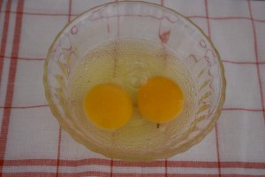
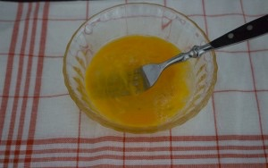
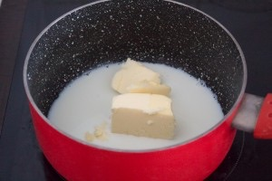
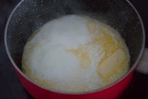
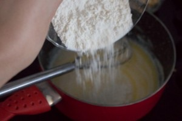
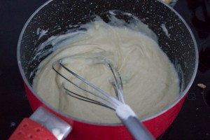
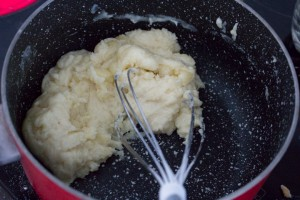
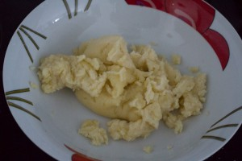
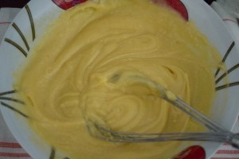
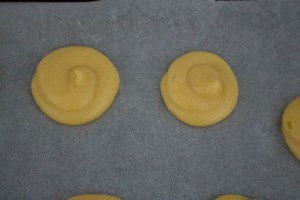
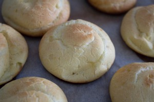
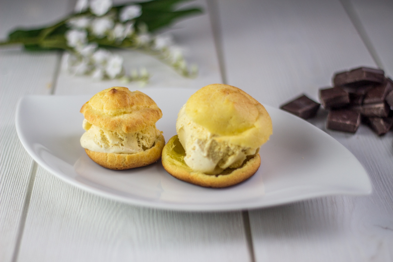
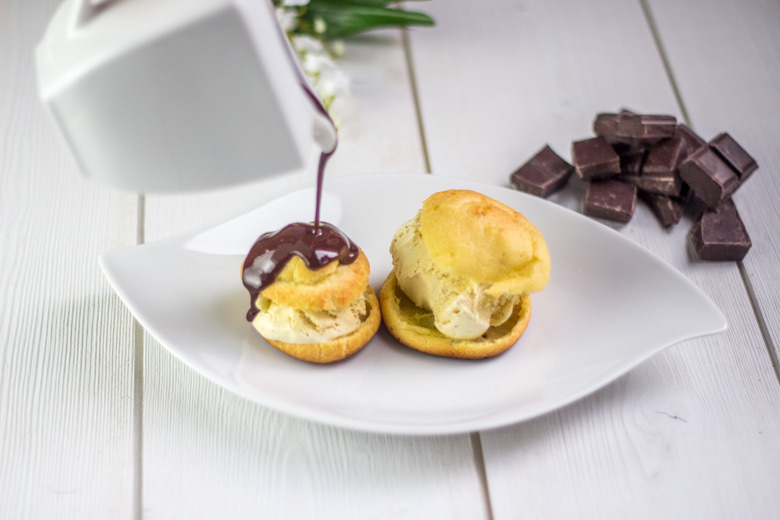

Les tips de la communauté
Recette classique très appréciée mais avec des difficultés mentionnées sur la pâte à choux qui ne gonfle pas toujours. Les commentaires louent le dessert mais relèvent son caractère capricieux.
Astuces
- La pâte à choux est la partie délicate qui ne gonfle pas toujours
- Utiliser une recette éprouvée pour la pâte à choux est recommandé
- Le dessert dessert français incontournable mais demande de la maîtrise
Variantes suggérées
- Expérimenter avec différentes garnitures et glaçages au chocolat
Ajustements signalés
- La pâte à choux peut être capricieuse et ne pas gonfler dans certains cas
- Les recettes de choux ne réussissent pas toujours même en suivant les instructions à la lettre